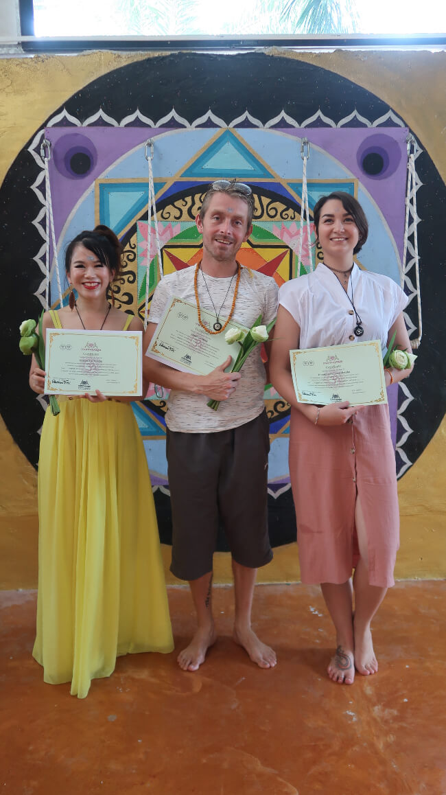
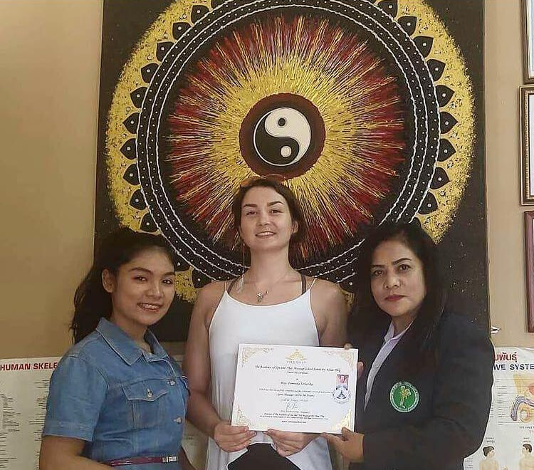
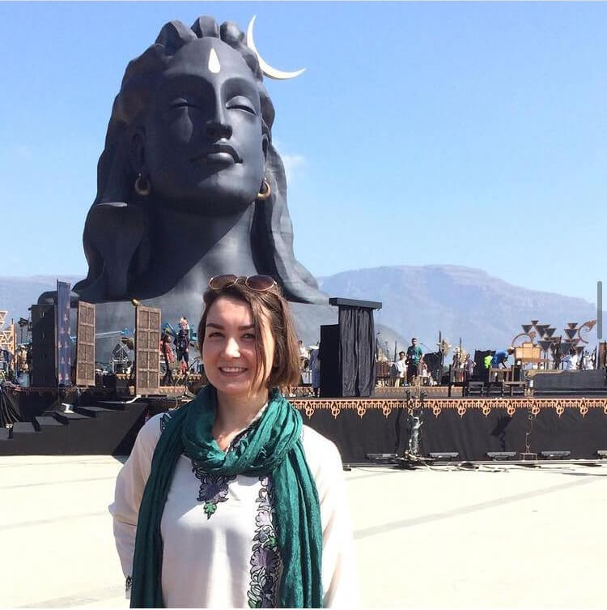

Our last main teacher and the owner of the school was Marina Frei from Germany who has been creating her wonderful place for over 20 years in Krabi with a purpose of teaching people about Yoga, Meditation and Reiki on a high and prestigious standard of knowledge and experience. Marina was focused on showing us the Yin Yoga techniques, Yoga Nidra, Chakras, Chakras Meditation and Reiki practices.
The 200 hours course was finished with a practical exam of conducting classes for 90 min including meditation and written exams from each sector. Each teacher was examining us according to their regulations and standards. Successfully each of the students passed the exams and we all went to the Buddist temple to receive blessings from the monks.
After this magical and life transforming month with yoga and peaceful way of living I wanted to stay longer in the Yoga school. Marina - the owner agreed that I could stay on voluntary terms for another 6 months. My duties were to teach all types of yoga twice a day for 90 min each class including meditations, for five days a week. I must say that it was one of the most beautiful chapters in my life. I gained all the necessary experience, confidence, learned the best ways of giving instructions for each type of class. The people I met there, were so amazing with golden hearts and they became my dear friends and family. Before I left Thailand I decided to learn a few techniques of Traditional Thai Massage and Sport Massage. Both courses were done in Thailand, Koh Samui in The Academy of Spa and Thai Massage School Samui by Khun Thip". 
Thanks to this I can give a small massage to the students during the Yoga session if the class is private or if there are only a few participants. This practice allows a body to go into a deeper relaxation while practicing asanas.  My next destination was India. The place where yoga had its beginnings. I had spent over two months travelling and participating in courses and ashrams activities. My first training was in Iyengar Yoga Centre in Goa in Arambol. My teacher was the amazing Sharat Aurora, who was one of the first Iyengars' students and who decided to open his own school and ashram - Himalayan Iyengar Yoga Center in Dharamkot. The course lasted for 3 weeks and gave me a huge understanding of alignment, asanas and anatomy. I learned how to work with people after car accidents, with serious injuries, disabilities and with elderly people. Following my enthusiasm I went to Shivananda Ashram in India, Madurai for two weeks where there was an intense program of early morning meditation, intermediate yoga twice a day in Shivananda style, lectures and evening meditation. The time spent in this colourful and wonderful Ashram taught me discipline, patience and Karma Yoga. My last course in India was Simplified Kundalini Yoga in India, Pollachi where I was practicing Kundalini Meditation for one week. This Ashram taught me about energies and focusing on chakras and also the place was surrounded by one of the most beautiful gardens I have ever seen where everything was fresh, peaceful and kind.
My final point of this "big learning trip" around Asia was in Bali for 6 months where I was conducting my own classes for big groups (up to 30 people) and individual classes. The classes were happening in Bali Flow Temple, which is an artist residency for yoga, aero silks, acro yoga and fire spinning and the owner of the Residency is Forest Schrodt from the US. This period of time where I could teach yoga, helped me to create my own style of teaching and become more comfortable and relaxed during the classes. I can honestly say that I love teaching yoga and meditation and to observe the effects and positive changes in people. I invite you to enjoy yoga with me...
"Dominika Urbanska"